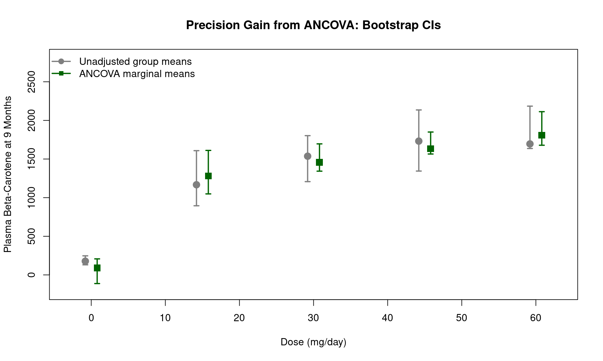

Code
library(Hmisc)
library(ggplot2)
library(knitr)
library(kableExtra)
tryCatch(source('pander_registry.R'), error = function(e) invisible(e))April 6, 2026
library(Hmisc)
library(ggplot2)
library(knitr)
library(kableExtra)
tryCatch(source('pander_registry.R'), error = function(e) invisible(e))These notes accompany Set14.pdf, which covers bootstrap methodology including the theoretical foundations, bias correction, and confidence interval construction. Here, we apply bootstrap methods to prediction problems from Lecture 13:
Read Set14.pdf first for the theoretical background.
In the beta carotene trial, subjects were randomly assigned to one of five dose levels (0, 15, 30, 45, or 60 mg/day). The dose levels and the number of subjects per dose were determined by the study design — they are fixed, not randomly sampled from a population.
This has two important consequences:
Standard errors: Classical (model-based) standard errors are appropriate when \(X\) is fixed and the variance model is correctly specified. Robust (sandwich) standard errors protect against heteroscedasticity, but when \(X\) is fixed by design and the model is correctly specified, they offer no improvement over classical SEs. In Lectures 12 and 13, we used classical SEs for this reason.
Bootstrap scheme: The standard “pairs” bootstrap (resampling entire rows of data) implicitly treats \(X\) as random. Each bootstrap sample may have different numbers of subjects per dose group. For a designed experiment with fixed \(X\), we should instead use a bootstrap that conditions on the design.
Stratified bootstrap: Resample subjects within each dose group, preserving the group sample sizes exactly. This respects the fixed-\(X\) design directly.
Residual bootstrap: Fit the model, extract residuals, resample the residuals, and construct new responses \(y^* = \hat{y} + e^*\). This conditions on \(X\) by keeping the predictor values fixed and only resampling the noise.
We demonstrate both below and compare the results.
In Lecture 13, we estimated marginal means (population-average predicted plasma beta-carotene at 9 months) for each dose group using the ANCOVA model with a threshold + linear parameterization. The marginal mean at dose \(d\) is:
\[ \hat{\mu}_{\text{marg}}(d) = \frac{1}{n} \sum_{i=1}^{n} \hat{y}_i(d, x_{0i}) \]
where \(x_{0i}\) is subject \(i\)’s observed baseline value. Because this is an average of predictions over the empirical distribution of baseline values, classical standard error formulas (which apply to linear functions of \(\hat{\beta}\)) do not directly apply. The bootstrap provides a straightforward solution.
carot <- read.csv("data/carot-nomissing.csv")
dose.levels <- sort(unique(carot$dose))
# Threshold + linear model from Lecture 12/13
carot$trt <- (carot$dose > 0) + 0
m.thres <- lm(carot3 ~ trt + dose + carot0, data = carot)
# Unadjusted model for comparison
m.unadj <- lm(carot3 ~ factor(dose), data = carot)We resample subjects with replacement within each dose group, so that every bootstrap sample has the same number of subjects per dose as the original study.
set.seed(42)
B <- 2000
# Indices for each dose group
dose.idx <- split(seq_len(nrow(carot)), carot$dose)
boot.marginal.strat <- matrix(NA, nrow = B, ncol = length(dose.levels))
boot.unadj.strat <- matrix(NA, nrow = B, ncol = length(dose.levels))
for(b in 1:B) {
# Resample within each dose group
idx <- unlist(lapply(dose.idx, function(ii) sample(ii, replace = TRUE)))
boot.dat <- carot[idx, ]
# Marginal means from ANCOVA
m.b <- lm(carot3 ~ trt + dose + carot0, data = boot.dat)
for(j in seq_along(dose.levels)) {
nd <- data.frame(dose = dose.levels[j],
carot0 = carot$carot0,
trt = (dose.levels[j] > 0) + 0)
boot.marginal.strat[b, j] <- mean(predict(m.b, newdata = nd))
}
# Unadjusted group means
m.u <- lm(carot3 ~ factor(dose), data = boot.dat)
for(j in seq_along(dose.levels)) {
nd.u <- data.frame(dose = dose.levels[j])
boot.unadj.strat[b, j] <- predict(m.u, newdata = nd.u)
}
}We keep the original predictor values fixed and resample only the residuals.
set.seed(42)
# Residuals from the fitted models
resid.thres <- residuals(m.thres)
resid.unadj <- residuals(m.unadj)
fitted.thres <- fitted(m.thres)
fitted.unadj <- fitted(m.unadj)
boot.marginal.resid <- matrix(NA, nrow = B, ncol = length(dose.levels))
boot.unadj.resid <- matrix(NA, nrow = B, ncol = length(dose.levels))
for(b in 1:B) {
# Resample residuals and construct new responses
e.star.thres <- sample(resid.thres, replace = TRUE)
e.star.unadj <- sample(resid.unadj, replace = TRUE)
boot.dat <- carot
boot.dat$carot3.thres <- fitted.thres + e.star.thres
boot.dat$carot3.unadj <- fitted.unadj + e.star.unadj
# ANCOVA marginal means
m.b <- lm(carot3.thres ~ trt + dose + carot0, data = boot.dat)
for(j in seq_along(dose.levels)) {
nd <- data.frame(dose = dose.levels[j],
carot0 = carot$carot0,
trt = (dose.levels[j] > 0) + 0)
boot.marginal.resid[b, j] <- mean(predict(m.b, newdata = nd))
}
# Unadjusted group means
m.u <- lm(carot3.unadj ~ factor(dose), data = boot.dat)
for(j in seq_along(dose.levels)) {
nd.u <- data.frame(dose = dose.levels[j])
boot.unadj.resid[b, j] <- predict(m.u, newdata = nd.u)
}
}# Point estimates (same for both approaches)
marginal.pts <- sapply(dose.levels, function(d) {
nd <- data.frame(dose = d, carot0 = carot$carot0, trt = (d > 0) + 0)
mean(predict(m.thres, newdata = nd))
})
unadj.pts <- predict(m.unadj, newdata = data.frame(dose = dose.levels))
# CIs from both approaches
ci.marg.strat <- data.frame(
Lower = apply(boot.marginal.strat, 2, quantile, 0.025),
Upper = apply(boot.marginal.strat, 2, quantile, 0.975))
ci.marg.resid <- data.frame(
Lower = apply(boot.marginal.resid, 2, quantile, 0.025),
Upper = apply(boot.marginal.resid, 2, quantile, 0.975))
comparison <- data.frame(
Dose = dose.levels,
Estimate = round(marginal.pts, 1),
`Stratified CI` = sprintf("(%.1f, %.1f)", ci.marg.strat$Lower, ci.marg.strat$Upper),
`Residual CI` = sprintf("(%.1f, %.1f)", ci.marg.resid$Lower, ci.marg.resid$Upper),
`Strat Width` = round(ci.marg.strat$Upper - ci.marg.strat$Lower, 1),
`Resid Width` = round(ci.marg.resid$Upper - ci.marg.resid$Lower, 1),
check.names = FALSE
)
kable(comparison,
caption = "ANCOVA marginal means: stratified vs. residual bootstrap 95% CIs") |>
kable_styling(bootstrap_options = c("striped", "hover"), full_width = FALSE)| Dose | Estimate | Stratified CI | Residual CI | Strat Width | Resid Width |
|---|---|---|---|---|---|
| 0 | 91.3 | (-111.9, 207.4) | (-196.3, 385.3) | 319.4 | 581.5 |
| 15 | 1281.4 | (1048.7, 1611.5) | (1103.4, 1554.1) | 562.7 | 450.7 |
| 30 | 1457.3 | (1342.9, 1696.1) | (1376.7, 1661.8) | 353.2 | 285.2 |
| 45 | 1633.2 | (1565.0, 1849.6) | (1564.6, 1849.8) | 284.6 | 285.2 |
| 60 | 1809.0 | (1678.7, 2113.0) | (1679.0, 2120.9) | 434.3 | 441.9 |
Both approaches condition on \(X\) (the dose design) and should give similar results
The residual bootstrap assumes the residuals are exchangeable (approximately equal variance across groups). If there is substantial heteroscedasticity, the stratified bootstrap is more robust
For the remainder of this analysis, we use the stratified bootstrap results
In Lecture 13, we noted that the theoretical variance reduction from ANCOVA is proportional to \((1 - \rho^2)\). We can now verify this empirically by comparing bootstrap CI widths.
# Unadjusted CIs (from stratified bootstrap)
unadj.ci <- data.frame(
Dose = dose.levels,
Estimate = as.numeric(unadj.pts),
Lower = apply(boot.unadj.strat, 2, quantile, 0.025),
Upper = apply(boot.unadj.strat, 2, quantile, 0.975)
)
# Marginal CIs (from stratified bootstrap)
marginal.ci <- data.frame(
Dose = dose.levels,
Estimate = marginal.pts,
Lower = ci.marg.strat$Lower,
Upper = ci.marg.strat$Upper
)
# Side-by-side comparison
precision <- data.frame(
Dose = dose.levels,
`Unadjusted Width` = unadj.ci$Upper - unadj.ci$Lower,
`Marginal Width` = marginal.ci$Upper - marginal.ci$Lower,
check.names = FALSE
)
precision$`Ratio (Marginal / Unadj)` <- precision$`Marginal Width` /
precision$`Unadjusted Width`
kable(precision, digits = c(0, 1, 1, 3),
caption = "Bootstrap 95% CI widths: unadjusted vs. ANCOVA marginal means") |>
kable_styling(bootstrap_options = c("striped", "hover"), full_width = FALSE)| Dose | Unadjusted Width | Marginal Width | Ratio (Marginal / Unadj) |
|---|---|---|---|
| 0 | 116.5 | 319.4 | 2.742 |
| 15 | 713.2 | 562.7 | 0.789 |
| 30 | 595.1 | 353.2 | 0.593 |
| 45 | 791.1 | 284.6 | 0.360 |
| 60 | 548.2 | 434.3 | 0.792 |
rho <- cor(carot$carot0, carot$carot3)
sprintf("Baseline-outcome correlation: rho = %.3f", rho)[1] "Baseline-outcome correlation: rho = 0.193"sprintf("Theoretical CI width ratio: sqrt(1 - rho^2) = %.3f", sqrt(1 - rho^2))[1] "Theoretical CI width ratio: sqrt(1 - rho^2) = 0.981"The empirical CI width ratio should be close to \(\sqrt{1 - \rho^2}\), the theoretical standard error reduction factor from ANCOVA
The marginal means and unadjusted means estimate the same population quantity (the average outcome at each dose), but the ANCOVA-based marginal means are more precise because they leverage the baseline-outcome correlation
plot(NULL, xlim = c(-3, 63), ylim = c(-200, 2800),
xlab = "Dose (mg/day)", ylab = "Plasma Beta-Carotene at 9 Months",
main = "Precision Gain from ANCOVA: Bootstrap CIs")
# Unadjusted
arrows(unadj.ci$Dose - 0.8, unadj.ci$Lower, unadj.ci$Dose - 0.8, unadj.ci$Upper,
angle = 90, code = 3, length = 0.04, col = "gray50", lwd = 2)
points(unadj.ci$Dose - 0.8, unadj.ci$Estimate, pch = 19, col = "gray50", cex = 1.5)
# ANCOVA marginal
arrows(marginal.ci$Dose + 0.8, marginal.ci$Lower, marginal.ci$Dose + 0.8, marginal.ci$Upper,
angle = 90, code = 3, length = 0.04, col = "darkgreen", lwd = 2)
points(marginal.ci$Dose + 0.8, marginal.ci$Estimate, pch = 15, col = "darkgreen", cex = 1.5)
legend("topleft",
c("Unadjusted group means", "ANCOVA marginal means"),
col = c("gray50", "darkgreen"), pch = c(19, 15), lwd = 2, bty = "n")